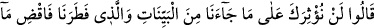
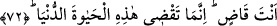

olursan benzer durumlara vâkıf olabilirsin.
“Böylece, hangimizin azâbının daha şiddetli ve sürekli olduğunu iyice
anlayacaksınız.” Mûsâ’nın mı, yoksa benim mi azâbım daha şiddetli ve devamlı
göreceksiniz. Aslında Hz. Mûsâ’nın azâb etmekle bir ilgisi yoktu. Ancak Fir’avn,
sihirbazların iplerinin ve değneklerinin Mûsâ (a.s.)’ın asâsı tarafından yutulduğunu
görünce ondan korkutulduklarını zannetti. Bu sebeple de böyle söyledi. Yukarıda
“âmentüm lehû (ona inandınız)” ifâdesinde Bahru’l-ulûm’dan yapılan nakilde geçtiği
üzere burada “hangimiz” ifâdesiyle Fir’avn’un maksadı kendisi ve Mûsâ’nın rabbi olur.
et-Te’vîlâtü’n-Necmiyye’de şöyle der: “Fir’avn “hangimizin azabının daha şiddetli
ve sürekli olduğunu iyice anlayacaksınız” dedi. Çünkü o, dünya azâbını ve şiddetini
görüyordu. Âhiret azâbından ve şiddetinden âmâ idi.”
72. Dediler ki: “Seni, bize gelen açık açık mûcizelere ve bizi yaratana tercih
edemeyiz. Öyle ise yapacağını yap! Sen, ancak bu dünya hayatında hükmünü
geçirebilirsin.”
Fir’avn’dan gelen tehdidlere hiç aldırmadan “dediler ki:”
Kâşifî der ki: “Sihirbazlar Cenâb-ı Hakk’ın cezbesi kadehinden mest oldular ve
gönülleri üzerine dökülen; birbiri ardınca zuhûr eden iltifât ve ilâhî ihsan nurlarından
dolayı kendilerinden geçtiler”
Sâkînin elinden bir yudum içen
Her ne ki fânîdir, Hak ile bâkî olur
Eteğini gayr düşüncesinden silker
“Leyse fi’d-dâri gayruhû…”[88] diye okur
Onun için de şeksiz şüphesiz olarak şöyle dediler: “Seni, bize gelen açık açık
mûcizelere ve bizi yaratana tercih edemeyiz.” Allâh’ın Hz. Mûsâ eliyle bize
gönderdiği hakikat olduğunda şüphe olmayan apaçık mûcizeleri bırakıp da senin dediğin
yola gelmeyiz. Onlar şöyle istidlâlde bulundular: “Eğer Mûsâ (a.s.)’ın bu yaptığı sihir
ise bizim sihirle ortaya attığımız iplerimiz ve değneklerimiz nerede kaldı?”
Burada, onların Hz. Mûsâ’nın elinde tecellî eden mûcizelerde zât ve sıfat nurlarını
gördüklerine işâret vardır. Onun için de onlara büyük imtihanlar önemsiz gelmiştir. Kim
Allâh’ı eşyâya tercih ederse, Allâh yolunda başına gelenler ona kolay olur. Büyüklerden
birisi şöyle demiştir: “Seni sınayanın Allah olduğunu bilmen, senden belâların acısını
hafifletir.”
“Bizi yaratana” bizi ve diğer bütün varlıkları var edene demektir. Bu ifâdenin